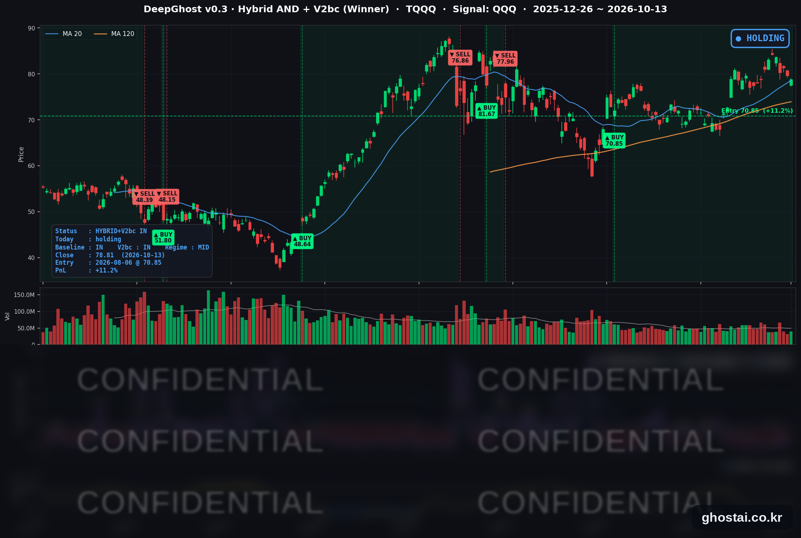

반도체 6일 연속 하락, 9월 CPI 변수
· Ghost.AI 데일리 리포트
👻 매일 시그널과 히스토리를 홈페이지에서 한눈에 → www.ghostai.co.kr
회원 페이지 안내 — 회원 가입하시면 커버리지 전 종목의 원본 시그널과 분석 레포트를 매일 확인하실 수 있습니다. 회원 페이지는 블로그·유튜브보다 먼저 업데이트됩니다. 선착순 100명을 모집하고 있으며, 이메일과 필명만으로 가입하실 수 있고 서비스 사용료는 받지 않습니다. 가입 신청 후 운영자 승인을 거쳐 이용하실 수 있습니다.
S&P 500은 0.02% 내린 7,805.45로 보합 마감했지만, 구성종목 493개 중 372개가 높게 출발했다가 294개가 시가보다 낮게 끝났습니다. 대형 은행 4곳이 3분기 실적을 발표했고, 씨티그룹이 예상을 웃돈 실적에도 5.60% 내리면서 금융 업종이 11개 업종 중 가장 약했습니다. 한국 증시의 반도체주 급락 여파로 미국 메모리주는 5~8% 낮게 출발했다가 장중 대부분 회복했고, 반도체 ETF(SOXX)는 0.17% 내려 2025년 5월 이후 처음 6거래일 연속 하락했습니다. 다시 열린 채권시장에서 10년물 금리는 10월 9일보다 2.7bp 내린 5.217%였지만, 연준 위원 세 명은 추가 인상 가능성을 이어서 말했습니다. TQQQ 전략은 48거래일째 보유를 유지했고, 전략 수익률은 +12.36%에서 +11.24%로 낮아졌습니다. 9월 CPI는 한국시간 10월 14일 밤 9시 30분에 발표됩니다.
📊 오늘의 매매 신호
| 항목 | 내용 |
|---|---|
| 오늘 할 일 | ✅ 아무것도 안 해도 됩니다 |
| 포지션 상태 | 📈 TQQQ 보유 중 (IN POSITION) |
| 매수 진입일 | 2026-08-06 (48거래일째) |
| 진입가 → 현재가 | $70.85 → $78.81 |
| 현재 포지션 수익 | +11.24% |
TQQQ 시그널 — IN POSITION
현재 상태: 매수 포지션 유지 중 | 이번 포지션 수익 +11.24%

QQQ가 -0.33% 내리면서 TQQQ는 -1.00% 내린 78.81달러로 마감했습니다. 두 종목 모두 10월 1일 이후 가장 낮은 종가입니다. 전략의 평가수익률은 전 거래일 +12.36%에서 +11.24%로 낮아졌습니다. 오늘 새 신호는 없었고 전략은 보유를 유지했습니다. 주가는 내렸지만 모델 기준으로 매도 신호까지의 여유는 전일보다 조금 늘었습니다. TQQQ 종가는 6월 2일 최고 종가(87.22달러)보다 9.64% 낮습니다.
오늘 QQQ 하락은 반도체 장비와 메모리 종목에서 나왔습니다. 나스닥100 안에서 어플라이드 머티어리얼즈(-6.69%)·케이던스(-4.08%)·마이크론(-3.62%)이 내렸고, 애플과 마이크로소프트는 사상 최고 종가를 경신했습니다. QQQ는 0.87% 낮게 출발해 장중에 회복하며 시가보다 0.55% 높게 끝났지만, S&P 500(-0.02%)보다는 더 내렸습니다. 전략 수익률은 8월 6일 진입 이후 최고였던 10월 6일(+18.91%)보다 7.67%p 낮습니다.
다음 확인 지점은 10월 14일 오전 8시 30분(미 동부시간, 한국시간 같은 날 밤 9시 30분)에 나오는 9월 CPI입니다. 10월 27~28일 FOMC 전에 나오는 마지막 큰 물가 지표입니다.
오늘 미국 시장 — 시황 요약
지수 마감
| 지수 | 종가 | 등락률 | 최고 종가 대비 |
|---|---|---|---|
| S&P 500 | 7,805.45 | -0.02% | -0.17% (10/6) |
| 나스닥 종합 | 27,204.38 | -0.15% | -1.43% (10/6) |
| 다우존스 | 51,670.10 | -0.35% | -4.93% (8/5) |
| 러셀 2000 (IWM) | 276.70 | -0.43% | -9.31% (8/14) |
| QQQ (나스닥100) | 743.57 | -0.33% | -2.12% (10/6) |
| TQQQ | 78.81 | -1.00% | -9.64% (6/2) |
| 반도체 ETF (SOXX) | 543.90 | -0.17% | -16.96% (6/22) |
지수는 보합이었지만 장중 방향은 엇갈렸습니다. S&P 500 구성종목 493개 중 372개가 전일 종가보다 높게 출발했고, 294개는 시가보다 낮게 끝났습니다. 오른 종목은 261개(중간값 +0.12%)입니다. 11개 업종 중 정보기술만 낮게 출발했고(시가 중간값 -1.06%), 72종목 중 49종목이 시가보다 높게 끝났습니다. 다우는 은행 실적 발표 직후 높게 출발했다가 0.35% 내려 3거래일 연속 상승을 멈췄고, IWM은 5월 19일 이후 가장 낮은 종가로 마감했습니다.
국채 금리 동향
10월 12일 콜럼버스 데이 휴장 뒤 채권시장이 다시 열렸습니다. 금리 변동은 휴장 전인 10월 9일 종가와 비교합니다.
| 만기 | 10/9 종가 | 10/13 종가 | 10/9 대비 |
|---|---|---|---|
| 3개월 | 4.057% | 4.057% | 0.0bp |
| 5년 | 5.021% | 5.007% | -1.4bp |
| 10년 | 5.244% | 5.217% | -2.7bp |
| 30년 | 5.600% | 5.563% | -3.7bp |
10년물 5.217%는 9월 25일 이후, 30년물 5.563%는 9월 28일 이후 가장 낮은 종가입니다. 장기물 금리가 더 많이 내려 10년물과 3개월물의 차이는 118.7bp에서 116.0bp로 줄었고, 커브는 역전 없는 우상향입니다. 5년물이 3개월물보다 95bp 높아 채권시장은 연준의 추가 인상 가능성을 계속 반영하고 있습니다. 휴장 사이 유가가 오르고 연준 위원들의 추가 인상 발언이 나왔지만 장기 금리는 내렸습니다. 다만 금리에 민감한 부동산 업종은 29종목 중 2종목만 시가보다 높게 끝나, 오늘 주가는 금리보다 실적과 반도체 재료의 영향이 컸습니다.
연준 발언 & 금리 패스
- 월러(Waller) 이사 (10/13, 블룸버그 뉴이코노미포럼 대담): 상시 투표권자입니다. 장기 국채 금리 상승이 주택·자동차 수요를 누르며 긴축 정책의 일을 "일부" 하고 있다고 말했고, 연준이 의도한 결과는 아니라고 덧붙였습니다. AI 설비 투자 수요가 반도체 등 가격을 올리고 있으며, 이 압력은 "2~3년" 이어질 수 있다고 봤습니다.
- 윌리엄스(Williams) 뉴욕 연은 총재 (10/13, 블룸버그 인터뷰): FOMC 부의장이자 상시 투표권자입니다. "올해 한 번 더 인상하는 것이 적절할 수 있다는 견해를 바꾸지 않았다"고 말했고, 2027년에 대해서는 지금으로선 추가 인상이 필요하다고 볼 이유가 없다고 했습니다.
- 콜린스(Collins) 보스턴 연은 총재 (10/13, 연설): 올해 투표권은 없습니다. 연말 전에 금리를 조금 더 올리는 것이 적절하다고 말했고, 데이터 센터·AI 투자, 관세, 중동 전쟁에 따른 에너지 비용을 물가 압력으로 꼽았습니다.
매파적 발언입니다. 세 위원 모두 추가 인상 쪽이지만 10월 회의를 특정하지는 않았고, 10월 회의는 동결 예상이 우세하다고 보도됐습니다. 10월 8일 무살렘, 10월 12일 해먹 총재에 이어 추가 긴축 발언이 이어졌습니다. 정책금리는 3.75~4.00%이고, 위원들의 공개 발언 금지 기간은 10월 17일(토)부터, FOMC는 10월 27~28일입니다.
오늘의 핵심 이슈
- 은행 실적 발표일, 금융 업종이 11개 업종 중 가장 약했습니다. 씨티그룹은 주당순이익 2.85달러로 예상치(약 2.65달러)를 웃돌았지만, 2분기보다 매출이 4%, 순이익이 10% 줄었고 주가는 5.60% 내려 2025년 4월 이후 가장 크게 하락했습니다. 웰스파고는 매출이 예상에 못 미쳐 3.10% 내렸고, 골드만삭스와 JP모건은 높게 출발했다가 하락 마감했습니다. 다이먼 JP모건 CEO는 "끈질긴 인플레이션, 높은 자산 가격, 오르는 금리"를 위험 요인으로 꼽았고, 뱅크오브아메리카는 자금세탁 방지·제재 위반으로 12억 달러 제재금을 받아 1.14% 내렸습니다.
- 한국 반도체주 급락 여파로 메모리주가 낮게 출발했다가 장중 대부분 회복했습니다. 한국 증시에서 SK하이닉스·삼성전자가 크게 내린 뒤 미국 메모리·저장장치 4종목은 5.5~7.9% 낮게 출발했다가 장중 대부분 회복했습니다. 어플라이드 머티어리얼즈는 투자자 행사에서 업계 장비 투자 전망치를 내놓지 않았고 6.69% 내렸습니다. SOXX는 2.60% 낮게 출발해 0.17% 하락으로 마감했고, 10월 5일 종가보다 7.74% 낮습니다.
- 장기 금리는 내렸지만 추가 인상 발언은 이어졌습니다. 10년물 금리는 9월 25일 이후 가장 낮았지만 월러·윌리엄스·콜린스 세 위원은 추가 인상 가능성을 말했습니다. 10월 회의 전 마지막 큰 물가 지표인 9월 CPI가 10월 14일 나옵니다.
변동성 & 투자심리
VIX는 15.21에서 15.27로 0.39% 올랐고, 10월 8일(15.41)보다는 낮습니다. CNN 공포탐욕지수는 44.7로 "공포" 구간으로 내려왔습니다(전 거래일 45.7 중립, 1주 전 46.8, 한 달 전 32.7). 구성 지표 중 주가 강도와 시장 폭은 "극단적 공포", 정크본드 수요는 "극단적 탐욕"입니다. S&P 500은 최고 종가와 0.17% 차이이고 VIX도 15 안팎이지만, 반도체 ETF가 6거래일째 내렸고 CPI를 하루 앞둔 장이라 전반적인 심리는 중립입니다.
매크로 & 원자재
| 품목 | 종가 | 등락률 |
|---|---|---|
| 원유 ETF (USO) | $153.09 | +1.36% |
| 금 ETF (GLD) | $381.67 | -0.13% |
- 유가: 후티 반군의 사우디 공격이 일주일째 이어졌고, 현지 시각 화요일 밤 다란의 아람코 본사 인근에서 폭발음이 들렸다는 로이터 보도가 나왔습니다(피해 여부 미확인). OPEC 월간 보고서는 사우디의 9월 생산량이 크게 늘었다고 밝혔고, 2026년 수요 증가 전망은 6개월 연속 낮췄습니다. USO는 4거래일 연속 올라 9월 24일 종가와 같은 수준으로 마감했습니다.
- 에너지 업종: 21종목 중 20종목이 올랐습니다. 정유 3사 밸레로(+4.69%)·필립스66(+4.00%)·마라톤페트롤리엄(+3.96%)과 엑손모빌(+1.12%)이 모두 사상 최고 종가를 기록했고, 경유 공급 부족으로 정제 마진이 높다는 보도가 이어졌습니다.
- 금: GLD는 2거래일 연속 내렸습니다.
- 9월 CPI 예상: 헤드라인 CPI는 전년 대비 3.6~3.7%(8월 3.4%)로 오를 것이라는 예상이 많고, 9월 휘발유 가격 상승이 주된 이유로 꼽힙니다. 근원 CPI는 8월 전년 대비 2.4%였고, 9월도 2.4% 안팎(전월 대비 +0.2%)으로 예상됩니다.
주요 종목 동향
| 종목 | 종가 | 등락률 | 비고 |
|---|---|---|---|
| META | 762.50 | +2.63% | 2거래일 연속 상승, 9/24 이후 최고 종가 |
| INTC | 102.81 | +1.44% | 3거래일 연속 하락 뒤 반등 |
| QCOM | 176.86 | +1.39% | 4거래일 연속 하락 뒤 반등 |
| NVDA | 228.52 | +0.97% | 4거래일 연속 하락 뒤 반등 |
| AVGO | 357.31 | +0.73% | |
| MSFT | 543.45 | +0.43% | 사상 최고 종가 (종전 2025/10/28, 542.07), 3거래일 연속 상승 |
| GOOGL | 353.78 | +0.30% | |
| AAPL | 341.27 | +0.09% | 사상 최고 종가 (종전 9/25, 341.07) |
| NFLX | 70.46 | -0.21% | 10/20 3분기 실적 |
| AMZN | 258.58 | -0.37% | |
| TSLA | 375.23 | -0.74% | 10/21 3분기 실적 |
| MU | 953.19 | -3.62% | 4거래일 연속 하락, 9/16 이후 최저 종가 |
커버리지 12종목 중 8종목이 오르고 4종목이 내렸습니다. 전날 모두 내렸던 반도체 5종목 중 마이크론을 뺀 4종목(인텔·퀄컴·엔비디아·브로드컴)은 반도체 ETF와 같이 낮게 출발했다가 장중에 반등했습니다. 마이크론은 5.56% 낮게 출발해 낙폭을 줄였지만 3.62% 내려 마감했고, 중국 CXMT와의 경쟁 우려와 AI 투자 자금 조달 우려가 함께 거론됐습니다. 메타는 유료 AI 모델 '뮤즈 원더' 공개 다음 날 2.63% 더 올랐고, 피보탈 리서치는 목표주가를 790달러에서 930달러로 올렸습니다. 애플과 마이크로소프트는 사상 최고 종가를 경신했지만, 종목별 당일 재료는 확인되지 않았습니다.
다음 일정 (미 동부시간)
- 10/14(수) 08:30 9월 CPI·실질소득 (한국시간 10/14 밤 9시 30분) / 14:00 베이지북 / 05:40·22:55 보우먼 부의장 대담·연설(방콕) / 장 시작 전 뱅크오브아메리카·모건스탠리·ASML 실적
- 10/15(목) 08:30 9월 PPI·소매판매 / 23:30 워시 의장·게오르기에바 IMF 총재 대담(방콕, 현지 10/16)
- 10/16(금) 08:30 9월 수입물가 / 09:15 9월 산업생산
- 10/17(토) 연준 위원 공개 발언 금지 기간 시작
- 10/20(화) 넷플릭스 3분기 실적(장 마감 후) / 10/21(수) 테슬라 3분기 실적(장 마감 후)
- 10/27~28 FOMC
다음 거래일 체크포인트 (10/14)
- 9월 CPI — 근원 CPI가 예상(전월 대비 +0.2%, 전년 대비 2.4% 안팎)과 다르게 나오면 10월·12월 인상 기대가 바뀔 수 있습니다. 발표 뒤 단기 금리와 나스닥100의 방향을 함께 봅니다.
- 반도체 — SOXX의 6거래일 연속 하락이 멈추는지 봅니다. 장 시작 전 ASML 실적이 반도체 장비주 흐름에 영향을 줄 수 있습니다.
- 금융 업종 — 뱅크오브아메리카·모건스탠리 실적 뒤 오늘의 은행주 약세가 이어지는지 확인합니다.
Ghost.AI — Quantitative AI Investment
Model: DeepGhost v0.3 | Transformer-Based Deep Learning
Coverage: 14 tickers | Updated every trading day after US market close
⚠️ 본 자료는 정보 제공 목적으로만 작성되었으며 투자 권유가 아닙니다. 모든 투자의 책임은 투자자 본인에게 있습니다. 과거 성과가 미래 수익을 보장하지 않습니다.
[유의사항]
- 본 서비스는 불특정 다수를 대상으로 발행되는 단방향 정보 제공 서비스이며, 투자자 개인의 재산 상황·투자 목적·위험 선호도를 반영한 개별 투자 조언이 아닙니다.
- 고스트에이아이 주식회사는 고객과 쌍방향 의사소통(개별 상담, 맞춤형 자문 등)을 제공하지 않습니다.
- 본 콘텐츠는 투자 권유 또는 매매 주문의 청약·청약의 권유에 해당하지 않으며, 최종 투자 판단 및 그에 따른 손익의 책임은 전적으로 투자자 본인에게 있습니다.
고스트에이아이 주식회사